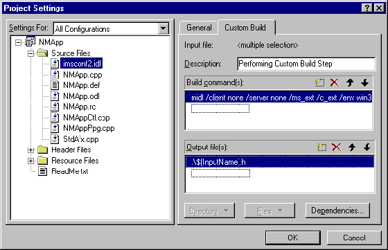
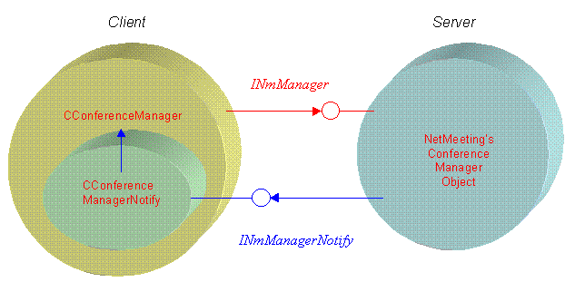
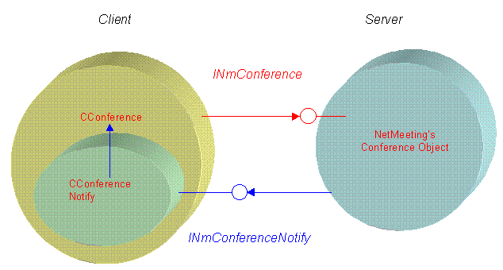

|
| ||
|
| ||
Alex Krassel and Steve Robinson
Panther Software
April 10, 1998
Contents
Overview
Getting Started with NetMeeting 2.1 Objects
Understanding the NetMeeting 2.1 Conference Manager
NetMeeting Conference Object, Channels, and Data Channels
Appendix
Imagine that you need to add conferencing and collaboration capabilities to your application. You decide to use Microsoft® NetMeeting 2.1. Good choice: it comes with ample capabilities, exposes Component Object Model (COM) interfaces so your application will be extensible with dynamic component discovery, it's free of charge with no run-time royalties, and it comes from a company that seems to be doing pretty well. After downloading Microsoft NetMeeting 2.1 from http://www.microsoft.com/windows/netmeeting/sdk/  and following the installation instructions, you get charged up and are ready to go. (For those interested in browsing the NetMeeting SDK online, see http://msdn.microsoft.com/developer/sdk/netmeeting/default.htm
and following the installation instructions, you get charged up and are ready to go. (For those interested in browsing the NetMeeting SDK online, see http://msdn.microsoft.com/developer/sdk/netmeeting/default.htm  .) With the COM Object Reference for NetMeeting 2.1 at hand and a bunch of samples, you proceed into uncharted waters to add video conferencing, and application sharing and collaboration.
.) With the COM Object Reference for NetMeeting 2.1 at hand and a bunch of samples, you proceed into uncharted waters to add video conferencing, and application sharing and collaboration.
Pretty soon, however, you discover that the samples, though really good, do not cover exactly what you need (samples never do). The reference material, although very complete in terms of interface descriptions, does not explain the intricate relationships between NetMeeting COM objects. Also, although you call interface methods exactly the way they are described in the COM Object Reference, some calls don't create the desired effect or simply fail altogether. After overdosing on caffeine, pulling your hair out, and beating your computer with a stick, you conclude that you are either missing some steps or the NetMeeting COM objects just don't work. After a caffeine detoxification session and recovery from a mental meltdown, you realize that the COM objects must work, so you are most likely omitting some very important steps. But what are these steps, and where the heck do they go in your code?
The answer is exactly what this article is provides. Throughout the course of this article, we'll follow NetMeeting's sequence of events and reveal some idiosyncrasies of working with the NetMeeting 2.1 COM objects. Before we proceed, however, let's make sure you are extremely comfortable with some key concepts to fully benefit from this article:
As you can tell from the topics listed above, you need to be pretty competent in COM to do your own NetMeeting code development. If you are just learning COM or want to brush up on Connection Points or component plug-ins, you may want to consider reviewing ActiveX Magic: An ActiveX Control and DCOM Sample Using ATL  , which demonstrates the use of Connection Points or COMponents
, which demonstrates the use of Connection Points or COMponents  and provides samples of dynamically discoverable plug-ins. This and many more articles are available at http://www.microsoft.com/com/
and provides samples of dynamically discoverable plug-ins. This and many more articles are available at http://www.microsoft.com/com/  . Another great source for learning COM is Essential COM by Don Box, Addison Wesley Press, and is highly recommended for anyone who plans to develop with COM as the backbone of an application. We also recommend that you develop on Windows NT® Workstation and your computer has at least 64 MB RAM.
. Another great source for learning COM is Essential COM by Don Box, Addison Wesley Press, and is highly recommended for anyone who plans to develop with COM as the backbone of an application. We also recommend that you develop on Windows NT® Workstation and your computer has at least 64 MB RAM.
If you are not familiar with COM or are attacking the problem in Microsoft Visual Basic® (this article is C++ based), you may want to consider Microsoft's NetMeeting ActiveX® control available at http://www.microsoft.com/windows/netmeeting/  , or Panther Software's bundle of NetMeeting ActiveX controls available at http://www.panthersoft.com/
, or Panther Software's bundle of NetMeeting ActiveX controls available at http://www.panthersoft.com/  . Both Microsoft's and Panther's ActiveX controls are available free of charge.
. Both Microsoft's and Panther's ActiveX controls are available free of charge.
To access the interfaces and call the methods that the NetMeeting 2.1 COM objects expose, you need to include the interface method declarations in your project. The easiest way to do this is to include the imsconf2.idl declaration file directly in your project, as do all the NetMeeting 2.1 SDK samples. By including this file, all the method prototypes will be generated by the Microsoft Interface Definition Language (MIDL) compiler. To include this file (after installing the NetMeeting 2.1 SDK), simply copy it to your project's directory and add it to your project. The imsconf2.idl file is located at X:\NetMeeting21SDK\Include. By copying directly to your project's directory, you won't have to worry about it again.
Once the file is in your project directory, you need to add a "custom build" step so that the imsconf2.idl file will generate the appropriate function declarations and GUID declarations for your application.
Open your project and select the Custom Build tab in the Project Settings window. The screen shot below shows a custom build step being added to a Microsoft Foundation Classes (MFC) ActiveX control project called NMApp.

Figure 1. Adding a custom build step
The exact custom build command (which is clipped in the screen shot above) is listed below for your convenience. The exact entry should contain the following line:
midl /client none /server none /ms_ext /c_ext /env win32 /Os /dlldata $(TargetDir)\dlldata.rpc /proxy $(TargetDir)\$(InputName).rpc /header $(InputName).h /iid $(InputName).c $(InputPath)
This custom build command will force invocation of the MIDL compiler as a part of the build process, so the files imsconf2.c and imsconf2.h will be generated. These two generated files will contain all of NetMeeting 2.1's GUIDs and interface function declarations.
Because these files should not be changing (after all, you won't be regenerating the NetMeeting 2.1 COM objects) the next step is to add the following lines to your stdafx.h file:
#include "imsconf2.c" // contains the CLSID declarations #include "imsconf2.h" // contains the interface declarations
Your project now has full access to the NetMeeting 2.1 COM interfaces.
Before we actually start with the NetMeeting 2.1 COM objects, we need to discuss a few helpful base classes that we are going to use from the NetMeeting 2.1 samples. The first base class we are going to take from the samples is RefCount. This class, as its name implies, handles reference counting for us and causes the class to self-destruct when its reference count goes back to 0. Every class that exposes a NetMeeting 2.1 COM interface will derive from at least this class. (We will be using multiple inheritance.) The RefCount class declaration and implementation is:
class RefCount
{
private:
LONG m_cRef;
public:
RefCount();
// Virtual destructor defers to destructor of derived class.
virtual ~RefCount();
// IUnknown methods
ULONG STDMETHODCALLTYPE AddRef();
ULONG STDMETHODCALLTYPE Release();
};
This class is implemented as follows:
RefCount::RefCount()
{
m_cRef = 1;
}
RefCount::~RefCount()
{
}
ULONG STDMETHODCALLTYPE RefCount::AddRef()
{
ASSERT(m_cRef >= 0);
::InterlockedIncrement(&m_cRef);
return (ULONG) m_cRef;
}
ULONG STDMETHODCALLTYPE RefCount::Release()
{
if (::InterlockedDecrement(&m_cRef) == 0)
{
delete this;
return 0;
}
ASSERT(m_cRef > 0); // remove this line if your project doesn't use MFC
return (ULONG) m_cRef;
}
The second class we will use from the samples is a base class for our notification sinks. This class handles the connection and disconnection (Advise()/Unadvise()) of the connection point sink interfaces. Every class that wraps around a NetMeeting 2.1 notification sink interface will derive from this class. The class declaration code for CNotify is listed below:
class CNotify
{
private:
DWORD m_dwCookie;
IConnectionPoint* m_pcnp;
public:
CNotify(void);
~CNotify();
HRESULT Connect(IUnknown* pUnk,
REFIID riid,
IUnknown* pUnkN);
HRESULT Disconnect();
};
And the implementation code for CNotify follows:
CNotify::CNotify()
{
m_pcnp = NULL;
m_dwCookie = 0;
}
CNotify::~CNotify()
{
Disconnect(); // Make sure we're disconnected
}
HRESULT CNotify::Connect
(
IUnknown* pUnk,
REFIID riid,
IUnknown* pUnkN
)
{
HRESULT hr;
ASSERT(m_dwCookie == 0); // make sure we do it only once
// Get the connection point container
IConnectionPointContainer* pcnpcnt;
hr = pUnk->QueryInterface(IID_IConnectionPointContainer,
reinterpret_cast<void**>(&pcnpcnt));
if (SUCCEEDED(hr))
{
// Find an appropriate connection point
hr = pcnpcnt->FindConnectionPoint(riid, &m_pcnp);
if (SUCCEEDED(hr))
{
ASSERT(m_pcnp != NULL);
// Connect the sink object
hr = m_pcnp->Advise(reinterpret_cast<IUnknown*>(pUnkN),
&m_dwCookie);
}
pcnpcnt->Release();
}
if (FAILED(hr))
{
m_dwCookie = 0;
}
return hr;
}
HRESULT CNotify::Disconnect()
{
if (m_dwCookie != 0)
{
// Disconnect the sink object
m_pcnp->Unadvise(m_dwCookie);
m_dwCookie = 0;
m_pcnp->Release();
m_pcnp = NULL;
}
return S_OK;
}
Now we are ready to look inside NetMeeting 2.1 COM objects, starting with center of it all: the Conference Manager.
Now that we have installed the NetMeeting 2.1 SDK and have set aside some C++ classes to reuse, let's review how NetMeeting works. The Conference Manager object is central to NetMeeting 2.1. All other NetMeeting 2.1 objects can be originated or accessed through the Conference Manager object.
The Conference Manager object exposes an interface called INmManager.
In our samples, we will create our own C++ wrapper class that holds the INmManager interface pointer. This C++ class will be called CConferenceManager. CConferenceManager will act as the client to the NetMeeting's internal Conference Manager object. NetMeeting's Conference Manager object calls client applications back through a connection point type sink interface called INmManagerNotify.
NetMeeting's internal Conference Manager object notifies you whenever a Conference or Call is initiated on the Conference Manager by calling back INmManagerNotify interface methods that you have to provide.
Accordingly, our CConferenceManager C++ class will also host an internal C++ class that implements the INmManagerNotify interface so that NetMeeting's Conference Manager can call it back. This nested internal C++ class owned by CConferenceManager will be called CConferenceManagerNotify. CConferenceManagerNotify will be responsible for implementing NetMeeting's INmManagerNotify interface. The design of CConferenceManager and its internal nested class CConferenceManagerNotify will manage connecctions in accordance with the diagram below:

Figure 2. How the client classes manage connections
The declaration for our CConferenceManager class is listed below:
class CConferenceManager
{
private:
INmManager* m_pINmManager;
private:
class CConferenceManagerNotify : public RefCount,
public CNotify,
public INmManagerNotify
{
private:
CConferenceManager* m_pOwnerManager;
private:
CConferenceManagerNotify(CConferenceManager* pOwnerManager);
~CConferenceManagerNotify();
//INmManagerNotify - You must implement these methods
HRESULT STDMETHODCALLTYPE NmUI(CONFN confn);
HRESULT STDMETHODCALLTYPE ConferenceCreated(
INmConference *pConference);
HRESULT STDMETHODCALLTYPE CallCreated(INmCall *pCall);
// CNotify related
HRESULT Connect (IUnknown *pUnk);
// IUnknown methods, AddRef() and Release() are implemented in
// the base class RefCont
HRESULT STDMETHODCALLTYPE QueryInterface(
REFIID riid, PVOID *ppvObj);
friend class CConferenceManager;
};
CConferenceManagerNotify* m_pConfManagerNotify;
public:
CConferenceManager();
~CConferenceManager();
HRESULT Initialize();
HRESULT CreateConference(BSTR bstrConfName,
BSTR bstrPassword);
HRESULT CreateCall(BSTR bstrHostAddress,
INmConference* pINmConference);
HRESULT AttachConference(INmConference* pINmConference);
HRESULT AttachCall(INmCall* pINmCall);
};
As mentioned previously, CConferenceManagerNotify, which implements INmManagerNotify, is an internal private nested class in CConferenceManager. In addition to deriving from INmManagerNotify, CConferenceManagerNotify derives from our RefCount class to handle reference counting (after all, it's a COM object implementation!), CNotify to handle the connection sink logic, and, finally, from NetMeeting's INmManagerNotify interface.
When data comes in through the INmManagerNotify interface, it will be delivered to the CConferenceManagerNotify class. To move the data up to our CConferenceManager class, we need to have a pointer to the CConferenceManager class in our internal class. This back pointer to the "owner" CConferenceManager object is going to be passed in the CConferenceManagerNotify constructor.
Let's look at the CConferenceManagerNotify members and methods. The first method we will examine is CConferenceManager::CConferenceManagerNotify::Connect, which does nothing more than call its base class' Connect. The base class gets the IUnknown of INmManagerNotify. The code is shown below:
HRESULT CConferenceManager::CConferenceManagerNotify::Connect
(
IUnknown* pUnk
)
{
return CNotify::Connect(pUnk,
IID_INmManagerNotify,
reinterpret_cast<IUnknown*>(this));
}
The second method we are going to implement is the standard QueryInterface of IUnknown:
HRESULT STDMETHODCALLTYPE CConferenceManager::CConferenceManagerNotify::QueryInterface
(
REFIID riid,
PVOID* ppvObject
)
{
HRESULT hr = S_OK;
if (riid == IID_IUnknown)
{
*ppvObject = (IUnknown*)this; // As unknown
}
else if (riid == IID_INmManagerNotify)
{
*ppvObject = (INmManagerNotify*)this;
}
else
{
hr = E_NOINTERFACE;
*ppvObject = NULL;
}
if (hr == S_OK)
{
AddRef();
}
return hr;
}
Note We are not implementing AddRef() and Release() because they are handled by base class RefCount.
We are ready now to start talking about the CConferenceManager class implementation.
Implementing the CConferenceManager class will require instantiating NetMeeting's INmManager and the CConferenceManagerNotify class that implements the INManagerNotify as noted above. Before we show you the trick we need to play, let's review CConferenceManager's constructor and destructor:
CConferenceManager::CConferenceManager()
{
m_pINmManager = NULL;
m_pConfManagerNotify = NULL;
}
The destructor handles all the cleanup code and insures that INmManagerNotify's UnAdvise is called through CconferenceManagerNotify's Disconnect method.
CConferenceManager::~CConferenceManager()
{
// Release our notification sink object
if (m_pConfManagerNotify != NULL)
{
m_pConfManagerNotify->Disconnect();
// Since this class derives from RefCount,
// It will self destruct after Release()
m_pConfManagerNotify->Release();
m_pConfManagerNotify = NULL;
}
// Release the NetMeeting's COM object
if (m_pINmManager != NULL)
{
m_pINmManager->Release();
m_pINmManager = NULL;
}
}
The CConferenceManager::Initialize() method needs a bit of explanation before we show the implementation.
Occasionally, a misbehaving application can cause NetMeeting's COM objects to be left in a state of limbo. If NetMeeting is in this state when your application starts, the INmManager will get created, and your sink interface (INmManagerNotify) will be connected to properly from NetMeeting's conference object, but INmManager::Initialize will fail. The best solution we have found is to cleanly close everything on this failure and repeat the steps of starting a NetMeeting session. We found this loop trick works like a charm and insures that our NetMeeting applications don't fail due to some other misbehaving application. The complete CConferenceManager::Initialize() method is listed here:
const UINT MAX_ATTEMPTS = 2;
HRESULT CConferenceManager::Initialize()
{
HRESULT hr;
LPCLASSFACTORY pcf;
BOOL bSuccess = FALSE;
for (int i = 0; i < MAX_ATTEMPTS; i++)
{
// Notify the system we want to use the conferencing services
// by creating a conference manager object
hr = ::CoGetClassObject(CLSID_NmManager, CLSCTX_INPROC,
NULL, IID_IClassFactory, (void**)&pcf);
if (SUCCEEDED(hr))
{
// Get the conference manager object
hr = pcf->CreateInstance(NULL, IID_INmManager,
(void**)&m_pINmManager);
if (SUCCEEDED(hr))
{
// Connect to the conference manager object
m_pConfManagerNotify = new CConferenceManagerNotify(this);
if (m_pConfManagerNotify != NULL)
{
// Call CConferenceNotify's Connect method
hr = m_pConfManagerNotify-> Connect(m_pINmManager);
if (SUCCEEDED(hr))
{
ULONG uchCaps = NMCH_ALL;
ULONG uOptions= NM_INIT_CONTROL;
//Initialize!!
hr = m_pINmManager->Initialize(&uOptions, &uchCaps);
bSuccess = SUCCEEDED(hr);
if (FAILED(hr))
{
m_pConfManagerNotify->Disconnect();
m_pConfManagerNotify->Release();
m_pConfManagerNotify = NULL;
}
}
}
}
pcf->Release();
}
if (bSuccess)
break;
}
return hr;
}
It is very important to note that m_pConfManagerNotify->Connect(...) is called before m_pINmManager->Initialize().
INmManager::Initialize() deserves a couple of words as well. You may have noticed the parameters we sent when the method was called:
ULONG uchCaps = NMCH_ALL; ULONG uOptions= NM_INIT_CONTROL; hr = m_pINmManager->Initialize(&uOptions, &uchCaps);
The first parameter specifies the channels in which we are interested. NMCH_ALL means that we want to use all five types of channels NetMeeting support (video, audio, file transfer, application sharing, and data). If for some reason we would like to use only a subset of channel types, we could do it here by combining the individual flags.
For example, if we want to use video channels and data channel, but not the other channels, we would use the following expression:
ULONG uchCaps = NMCH_VIDEO | NMCH_DATA;
The second parameter is used to tell NetMeeting how to start its internals. There are 3 choices:
Because we want to take complete control over NetMeeting's user interface, we are using NM_INIT_CONTROL in the sample code.
Now that we have seen how CConferenceManager works, it is time to show the remaining implementation of CConferenceManagerNotify. The remaining methods to be implemented in CConferenceManagerNotify are actually NetMeeting's INmManagerNotify advise sink interface. INmManagerNotify is like other sink interfaces. That is, whenever asynchronous events take place inside NetMeeting's conference manager object, they are passed through this sink. Again, because we wrapped this sink with our classes, the asynchronous events are ultimately received in our CConferenceManager class.
NetMeeting's internal Conference Manager object notifies you whenever a conference or call is initiated on the Conference Manager by calling back INmManagerNotify interface methods that you are required to implement.
There are actually three types of events that could be reported through the INmManagerNotify sink interface:
In either of these scenarios, the INmManagerNotify::ConferenceCreated(INmConference* pINmConference) method gets called in our sink. At this point we can gain access to the INmConference object through the parameter of this call:
HRESULT STDMETHODCALLTYPE CConferenceManager::CConferenceManagerNotify::ConferenceCreated
(
INmConference* pIConference
)
{
if (m_pOwnerManager != NULL) // relay it to the outer object
return m_pOwnerManager->AttachConference(pIConference);
else
return E_FAIL;
}
We presume that the CConferenceManager class implements the AttachConference() method that creates an instance of a C++ wrapper class for the NetMeeting's Conference objects -- as shown in NetMeeting Conference Object, Channels, and Data Channels.
2. A new internal NetMeeting Call object gets created. This event can also be triggered in either of two ways:
Again, in either case the INmManagerNotify::CallCreated(INmCall* pINmCall) method gets called. Like above, at this point we gain access to the Call object through the parameter of this call:
HRESULT STDMETHODCALLTYPE CConferenceManager::CConferenceManagerNotify::CallCreated
(
INmCall* pICall
)
{
if (m_pOwnerManager != NULL) // relay it to the outer object
return m_pOwnerManager->AttachCall(pICall);
else
return E_FAIL;
}
Again, we presume that CConferenceManager class implements the AttachCall() method that creates an instance of a C++ wrapper class for NetMeeting's Call objects.
3. NetMeeting's Conference Manager object -- related to a user interface in your custom application -- might need an update due to an internal state change. In this case, the INmManagerNotify::NmUI(CONFN confn) method gets called.
Once you have a plan for handling the three types of events that could be reported through your sink, especially the ConferenceCreated notification, you might be wondering how one would start a conference. The code to start a conference is most likely similar to the following:
HRESULT CConferenceManager::CreateConference
(
BSTR bstrConfName,
BSTR bstrPassword
)
{
// first make sure we have a valid conference manager object
if (m_pINmManager == NULL)
return E_FAIL;
INmConference* pINmConference = NULL;
HRESULT hr = m_pINmManager->CreateConference(&pINmConference,
bstrConfName,
bstrPassword,
NMCH_ALL);
return hr;
}
The CreateConference method calls the INmManager::CreateConference(...) method. As a result, NetMeeting creates an internal Conference object and returns its INmConference interface pointer in the first parameter. The INmManager::CreateConference() method also takes the conference name, password, and a flag that indicates the subset of channel types for this particular conference.
NetMeeting calls, like those you might see in Internet Explorer 4.0, can be instantiated in a similar way (but like all NetMeeting 2.1 conferences, they are not password-protected):
HRESULT CConferenceManager::CreateCall
(
BSTR bstrHostAddress,
INmConference* pINmConference
)
{
if (m_pINmManager == NULL || pIConference == NULL)
return E_FAIL;
INmCall* pICall = NULL;
HRESULT hr = m_pINmManager->CreateCall(&pINmCall, NM_CALL_DEFAULT,
NM_ADDR_IP, bstrHostAddress,
pINmConference);
return hr;
}
Here when we call the INmManager::CreateCall() method, NetMeeting creates an internal Call object and returns its INmCall interface pointer in the first parameter. You might be wondering why we pass an interface to be initialized and then do nothing with it. The reason is consistency. We let our sink interface handle these objects in ConferenceCreated and CallCreated methods.
Now that we have seen the basics of NetMeeting, we are ready to review Conferences, Channels, and Data Channels.
Whenever a NetMeeting Conference object is instantiated, NetMeeting automatically creates Audio, Video, File Transfer, and Application Sharing and Collaboration channels, and notifies you of their creation through INmConferenceNotify. These channels only exist within the context of a NetMeeting Conference object.
When the AttachConference call is received as discussed in Understanding the NetMeeting 2.1 Conference Manager, we are going to wrap the inbound INmConference object with our own C++ class. This class will apply exactly the same approach used for the NetMeeting Conference Manager object. This class will be called CConference. This C++ class will act as the client to the NetMeeting's internal Conference object by maintaining an INmConferenceNotify interface. The relationship is depicted in the following diagram:

Figure 3. CConference acts as client
Because you are notified through the INmConferenceNotify sink interface, it is your responsibility to implement the INmConferenceNotify sink interface and handle its methods.
For example, when an Audio channel is created by NetMeeting's conference object, you are notified on INmConferenceNotify::ChannelChanged(...). When an INmChannel is sent to you through this method, it is your responsibility to either create your own wrapper class or class member to maintain this interface pointer. An implementation of ChannelChanged might be:
HRESULT STDMETHODCALLTYPE
CConference::CConferenceNotify::ChannelChanged
(
NM_CHANNEL_NOTIFY uNotify,
INmChannel* pIChannel
)
{
// validate all pointers first
if (m_pOwnerConference == NULL ||
m_pOwnerConference->m_pINmConference == NULL ||
pIChannel == NULL)
return E_FAIL;
HRESULT hr = S_OK;
switch (uNotify)
{
case NM_CHANNEL_ADDED:
hr = m_pOwnerConference->AttachChannel(pIChannel);
break;
case NM_CHANNEL_REMOVED:
hr = m_pOwnerConference->DetachChannel(pIChannel);
break;
case NM_CHANNEL_UPDATED:
hr = m_pOwnerConference->UpdateChannel(pIChannel);
break;
}
return hr;
}
The code example above provides three methods within our CConference wrapper class:
HRESULT CConference::AttachChannel(INmChannel* pIChannel)
{
// Determine channel type
ULONG uType;
HRESULT hr = pIChannel->GetNmch(&uType);
if (FAILED(hr))
{
return hr;
}
switch (uType)
{
case NMCH_VIDEO:
// Do something here for the video channel
//...
break;
case NMCH_AUDIO:
// Do something here for the audio channel
//...
break;
case NMCH_DATA:
// Do something here for the data channel
//...
break;
case NMCH_FT:
// Do something here for the file transfer channel
//...
break;
case NMCH_SHARE:
// Do something here for the sharing and collaboration channel
//...
break;
}
return S_OK;
}
2. DetachChannel (INmChannel* pIChannel) will be called whenever a channel gets destroyed.
3. UpdateChannel (INmChannel* pIChannel) is called to notify the client of the NetMeeting conference object about the updates that are happening to the specific channels.
Unlike the Audio, Video, File Transfer, and Application and Collaboration channels, the Data Channel is not automatically created for you by the NetMeeting Conference object. This is because you can create an unlimited number of Data Channels and each Data Channel is represented by a unique GUID. For example, if two applications are participating in a conference and both applications create a Data Channel with the same GUID, the two Data Channels communicate with each other. Following this methodology, if Application A creates a Data Channel with GUID ABC and Application B creates one with GUID XYZ, the two data channels will not be talking to each other. Pretty cool use of GUIDs.
You can use Data Channels to handle almost everything from commands to custom data. The CConference wrapper class that is created in response to a NetMeeting:INmConference being created is also a great class for implementing a Data Channel, because you typically would have a conference taking place if you required a Data Channel.
Data Channels, however, are extremely tricky because they require worker threads to handle data being sent out and data being received for optimization.
The complete CConference class with threads and data queues is:
#include <vector> // for the collection implementation (STL)
class CChannelData; // the data channel class wrapper forward declaration
class CConference
{
private:
INmConference* m_pINmConference;
CChannelData* m_pDataChannelObj;
CLSID m_clsidDataChannel;
...
private:
class CConferenceNotify : public RefCount,
public CNotify,
public INmConferenceNotify
{
private:
CConference* m_pOwnerConference;
CConferenceNotify(CConference* pOwnerConference);
~CConferenceNotify();
private:
// INmConferenceNotify
HRESULT STDMETHODCALLTYPE NmUI(CONFN uNotify);
HRESULT STDMETHODCALLTYPE StateChanged(NM_CONFERENCE_STATE uState);
HRESULT STDMETHODCALLTYPE MemberChanged(NM_MEMBER_NOTIFY uNotify,
INmMember *pfMember);
HRESULT STDMETHODCALLTYPE ChannelChanged(NM_CHANNEL_NOTIFY uNotify,
INmChannel *pChannel);
// CNotify methods
HRESULT STDMETHODCALLTYPE Connect (IUnknown *pUnk);
HRESULT STDMETHODCALLTYPE Disconnect();
// IUnknown methods
ULONG STDMETHODCALLTYPE AddRef();
ULONG STDMETHODCALLTYPE Release();
HRESULT STDMETHODCALLTYPE QueryInterface(REFIID riid, PVOID *ppvObj);
friend class CConference;
};
CConferenceNotify* m_pConferenceNotify;
private:
class CQueue;
class CQueueElement
{
private:
byte* m_pBuffer;
ULONG m_uSize;
private:
CQueueElement(byte* pBuff, ULONG uSize);
~CQueueElement();
friend class CConference;
friend class CQueue;
};
class CQueue
{
private:
std::vector<CQueueElement*> m_Queue;
CRITICAL_SECTION m_CriticalSection;
private:
CQueue();
~CQueue();
CQueueElement* GetFirstQueueElement(bool bRemove = true);
void AddQueueElement(CQueueElement* pQueueElement);
long GetQueueSize();
void RemoveFirstQueueElement();
friend class CConference;
};
CQueue m_QueueIncoming;
CQueue m_QueueOutgoing;
static unsigned int __stdcall ServiceQueueIn(void* pArg);
static unsigned int __stdcall ServiceQueueOut(void* pArg);
bool m_bKillThreads;
bool m_bServiceQueueInDied;
bool m_bServiceQueueOutDied;
public:
CConference(INmConference* pIConference);
~CConference();
HRESULT CreateDataChannel();
HRESULT ProcessDataReceived(INmMember* pMember, ULONG uSize,
byte* pvBuffer, ULONG dwFlags);
HRESULT SendData(ULONG uSize, byte* pBuffer);
HRESULT AttachChannel(INmChannel* pIChannel);
HRESULT DetachChannel(INmChannel* pIChannel);
HRESULT UpdateChannel(INmChannel* pIChannel);
...
friend class CQueue;
};
Let's start by examining the constructor and destructor of this class. In the constructor of CConference we need to instantiate and connect the advise sink interface implementation object. The incoming and outgoing queue worker threads will also be started in CConference's constructor:
CConference::CConference
(
INmConference* pIConference
)
{
m_pDataChannelObj = NULL;
m_pINmConference = pIConference;
m_pConferenceNotify = new CConferenceNotify(this);
if (m_pConferenceNotify != NULL)
{
HRESULT hr = m_pConferenceNotify->Connect(m_pConference);
if (FAILED(hr))
{
delete m_pConferenceNotify;
m_pConferenceNotify = NULL;
}
}
// Start the outgoing queue worker thread
unsigned int threadId;
_beginthreadex(NULL, 0, &ServiceQueueOut, this,
0, &threadId);
m_bServiceQueueOutDied = (threadId == 0);
// Start the incoming queue worker thread
_beginthreadex(NULL, 0, &ServiceQueueIn, this,
0, &threadId);
m_bServiceQueueInDied = (threadId == 0);
m_bKillThreads = false;
}
CConference's destructor takes care of the cleanup, including the Data Channel object's release. (Data Channel creation will be discussed in just a minute.) If you are planning to access other channels, this is the best place to release them as well. For example, you might want to hook into the File Transfer and Application and Collaboration channels.
CConference::~CConference()
{
// Terminate both worker thread by setting the termination flag on
m_bKillThreads = true;
// Wait until both worker threads exit
while (!m_bServiceQueueInDied || !m_bServiceQueueOutDied)
{
::Sleep(20);
}
if (m_pDataChannelObj != NULL)
{
delete m_pDataChannelObj;
}
// Release conference notify sink
if (m_pConferenceNotify != NULL)
{
m_pConferenceNotify ->Disconnect();
m_pConferenceNotify ->Release();
m_pConferenceNotify = NULL;
}
if (m_pINmConference!= NULL)
{
m_pINmConference ->Release();
m_pINmConference = NULL;
}
}
Note We used simple boolean flags to synchronize our threads in the sample code above. We could have accomplished the same task by utilizing semaphores.
In the CConference class we have worker threads to service both data received and data that needs to be sent.
However, it is a good idea to implement some handshaking between applications before sending data through a Data Channel. Data Channels are created independently and separately on each machine that participates in a conference. Because of that, even if you run identical code, with hard coded GUIDs identifying the Data Channels it is still very possible and likely that there will be a slight timing difference between when the Data Channels are actually created. If an application running on Computer A attempts to send some data during this brief period of time, INmChannelData::SendData(...) will succeed but the target computer(s) will never receive this data.
In addition to handshaking, it is also a good idea to create a fault-tolerant system for creating a Data Channel. By kicking the worker thread and having the thread create the Data Channel, you allow your application to continue to add queue elements while attempting to create a Data Channel. Here's a sample of some relatively fault-tolerant code for creating a Data Channel:
unsigned int __stdcall CConference::ServiceQueueOut(void* pArg)
{
CConference* pThis = reinterpret_cast<CConference*>(pArg);
if (pThis != NULL)
{
while (true)
{
// First check if ready to exit
if (pThis->m_bKillThreads)
break;
//get the next queue element, don't remove from //the queue
CQueueElement* pQueueElement = pThis->m_QueueOutgoing;
GetFirstQueueElement(false);
if (pQueueElement != NULL)
{
// Check if there is a valid data channel
if (pThis->m_pDataChannelObj != NULL)
{
//Send data out and remove from queue
HRESULT hr = pThis->pDataChannelObj->
m_pINmChannelData->SendData(NULL,
pQueueElement->m_dwSize,
pQueueElement->m_pBuffer,
0);
if (SUCCEEDED(hr))
{
pThis->m_QueueOutgoing.
RemoveFirstQueueElement();
}
}
else
{
// Attempt to create data channel and leave data in queue
pThis->CreateDataChannel();
}
}
::Sleep(SLEEP_TIME);
}
m_bServiceQueueOutDied = true;
}
return 0;
}
And this is how the Data Channel object is being created:
const UINT MAX_ATTEMPTS = 10; //this is an arbitrary number
HRESULT CConference::CreateDataChannel()
{
if (m_pDataChannelObj != NULL)
return S_FALSE;
HRESULT hr = S_OK;
// Attempt to create data channel
INmChannelData* pINmChannelData;
for (int i = 0; i < MAX_ATTEMPTS; i++)
{
hr = m_pINmConference->CreateDataChannel(&pINmChannelData,
m_clsidDataChannel);
if (SUCCEEDED(hr))
{
m_pDataChannelObj = new CChannelData(pINmChannelData);
if (m_pDataChannelObj == NULL)
{
return E_OUTOFMEMORY;
}
break;
}
//give netmeeting some time
::Sleep(20);
}
return hr;
}
You should note that starting with NetMeeting 2.1, Microsoft attempts to establish an H.323 call first (Audio/Video only). Only after this protocol is either established or abandoned does the T.120 data call get attempted. Our code above continually checks to see if the channel can be created. We found this to be a very safe technique. However, it is possible to call INmConference::GetID before creating the channel. This method returns NM_E_NO_T120_CONFERENCE if the T.120 call does not complete.
Readers intending to implement inbound and outbound queues and worker threads can find the remainder of the queue implementation code in the Appendix.
The Data Channel object exposes an interface called INmChannelData and calls the client application back through a connection point type sink interface called INmChannelDataNotify.
Below is a sample CChannelData class that holds (and wraps) the INmChannelData interface pointer. This class also hosts an internal C++ class that implements the INmChannelDataNotify interface:
class CConference;
class CChannelData
{
private:
INmChannelData* m_pINmChannelData;
CConference* m_pOwnerConference;
private:
class CChannelDataNotify : public RefCount, public CNotify,
public INmChannelDataNotify
{
private:
CChannelData* m_pOwnerChannelData;
CChannelDataNotify(CChannelData* pOwnerChannelData);
~CChannelDataNotify();
private:
// INmChannelDataNotify
HRESULT STDMETHODCALLTYPE DataSent(INmMember* pMember,
ULONG uSize,
byte* pvBuffer);
HRESULT STDMETHODCALLTYPE DataReceived(INmMember* pMember,
ULONG uSize,
byte* pvBuffer,
ULONG dwFlags);
// INmChannelNotify
HRESULT STDMETHODCALLTYPE NmUI(CONFN uNotify);
HRESULT STDMETHODCALLTYPE MemberChanged(NM_MEMBER_NOTIFY uNotify,
INmMember *pfMember);
// CNotify methods
HRESULT STDMETHODCALLTYPE Connect (IUnknown *pUnk);
HRESULT STDMETHODCALLTYPE Disconnect();
// IUnknown methods
ULONG STDMETHODCALLTYPE AddRef();
ULONG STDMETHODCALLTYPE Release();
HRESULT STDMETHODCALLTYPE QueryInterface(REFIID riid,
PVOID *ppvObj);
friend class CChannelData;
};
CChannelDataNotify* m_pChannelDataNotify;
public:
CChannelData(INmChannelData* pINmChannelData,
CConference* pOwnerConference);
~CChannelData();
HRESULT ProcessDataReceived(INmMember* pMember,
ULONG uSize,
byte* pvBuffer,
ULONG dwFlags);
friend class CConference;
};
As you can see, we store the interface pointer in the m_pINmChannelData member variable, and we need to have a pointer back to the owner CConference object. We also need to instantiate and connect the notification sink interface implementation object.
Below is the constructor and destructor of our CChannelData:
CChannelData::CChannelData
(
INmChannelData* pINmChannelData,
CConference* pOwnerConference
)
{
m_pINmChannelData = pINmChannelData;
m_pOwnerConference = pOwnerConference;
m_pChannelDataNotify = new CChannelDataNotify(this);
if (m_pChannelDataNotify != NULL)
{
HRESULT hr = m_pChannelDataNotify->Connect(m_pINmChannelData);
if (FAILED(hr))
{
delete m_pChannelDataNotify;
m_pChannelDataNotify = NULL;
}
}
}
CChannelData::~CChannelData()
{
// Release data channel notify sink
if (m_pChannelDataNotify != NULL)
{
m_pChannelDataNotify->Disconnect();
m_pChannelDataNotify->Release();
m_pChannelDataNotify = NULL;
}
if (m_pINmChannelData != NULL)
{
m_pINmChannelData->Release();
m_pINmChannelData = NULL;
}
}
The most important method of the INmChannelDataNotify advise sink interface is INmChannelDataNotify::DataReceived(). NetMeeting calls this when data comes through the data channel from the remote machine.
The INmChannelDataNotify::DataReceived() method takes four parameters. The first parameter of this method contains the pointer to the INmMember interface. This interface allows us to identify the sender of the data. This parameter is important if your application allows for three-way (or more) conferencing capabilities.
The second and third paramters are the size of the data block and the pointer to the buffer containing the data block, respectively.
The fourth parameter is a flag that can be a combination of the following:
When the INmChannelDataNotify::DataReceived() method is called, the data is passed to the CChannelData owner, which, in its own turn, relays it to its CConference owner. CConference simply adds this data to its incoming queue to be processed by the incoming queue worker thread.
Below is the code for CChannelDataNotify::DataReceived and CChannelData::ProcessDataReceived:
HRESULT STDMETHODCALLTYPE CChannelData::CChannelDataNotify::DataReceived
(
INmMember* pMember,
ULONG uSize,
byte* pvBuffer,
ULONG dwFlags
)
{
if (m_pOwnerChannelData != NULL)
return m_pOwnerChannelData->ProcessDataReceived(pMember, uSize,
pvBuffer, dwFlags);
else
return E_FAIL;
}
HRESULT CChannelData::ProcessDataReceived
(
INmMember* pMember,
ULONG uSize,
byte* pvBuffer,
ULONG dwFlags
)
{
if (m_pOwnerConference!= NULL)
return m_pOwnerConference->ProcessDataReceived(pMember, uSize,
pvBuffer, dwFlags);
else
return E_FAIL;
}
NetMeeting is a super-powerful API. Once you learn how it all works and the tricks for NetMeeting development, you can do just about anything. Hopefully this article has shed some light on the workings of NetMeeting so that your next caffeine overdose results in pure productivity and not a mental meltdown.
CConference::CQueueElement::CQueueElement
(
byte* pBuff,
ULONG uSize
)
{
if (uSize > 0 &&
pBuff != NULL)
{
m_pBuffer = new byte [uSize];
m_uSize = uSize;
memcpy(m_pBuffer, pBuff, uSize);
}
else
{
m_pBuffer = NULL;
m_uSize = 0;
}
}
CConferenceCQueueElement::~CQueueElement()
{
if (m_pBuffer != NULL)
delete [] m_pBuffer;
}
CConference::CQueue::CQueue()
{
::InitializeCriticalSection(&m_CriticalSection);
}
CConference::CQueue::~CQueue()
{
::EnterCriticalSection(&m_CriticalSection);
// Free the remaining queue elements
CQueueElement* pQueueElement = NULL;
for (long nIdx = 0; nIdx < m_Queue.size(); nIdx++)
{
pQueueElement = m_Queue.at(nIdx);
if (pQueueElement != NULL)
delete pQueueElement;
}
m_Queue.clear();
::LeaveCriticalSection(&m_CriticalSection);
::DeleteCriticalSection(&m_CriticalSection);
}
long CConference::CQueue::GetQueueSize()
{
long lSize = 0;
::EnterCriticalSection(&m_CriticalSection);
lSize = m_Queue.size();
::LeaveCriticalSection(&m_CriticalSection);
return lSize;
}
CConference::CQueueElement* CConference::CQueue::GetFirstQueueElement
(
bool bRemove /*=true*/
)
{
CQueueElement* pQueueElement = NULL;
::EnterCriticalSection(&m_CriticalSection);
if (m_Queue.size() > 0)
{
pQueueElement = m_Queue.at(0);
if (bRemove)
m_Queue.erase(&m_Queue.at(0));
}
::LeaveCriticalSection(&m_CriticalSection);
return pQueueElement;
}
void CConference::CQueue::RemoveFirstQueueElement()
{
CQueueElement* pQueueElement = NULL;
::EnterCriticalSection(&m_CriticalSection);
if (m_Queue.size() > 0)
{
pQueueElement = m_Queue.at(0);
m_Queue.erase(&m_Queue.at(0));
}
::LeaveCriticalSection(&m_CriticalSection);
if (pQueueElement != NULL)
delete pQueueElement;
}
void CConference::CQueue::AddQueueElement
(
CQueueElement* pQueueElement
)
{
if (pQueueElement != NULL)
{
::EnterCriticalSection(&m_CriticalSection);
m_Queue.push_back(pQueueElement);
::LeaveCriticalSection(&m_CriticalSection);
}
}
HRESULT CConference::SendData(ULONG uSize, byte* pBuffer)
{
CQueueElement* pQueueElement = new CQueueElement(pBuffer, uSize);
if (pQueueElement == NULL)
return E_OUTOFMEMORY;
m_QueueOutgoing.AddQueueElement(pQueueElement);
return S_OK;
}
HRESULT CConference::ProcessDataReceived
(
INmMember* pMember,
ULONG uSize,
byte* pvBuffer,
ULONG dwFlags
)
{
CQueueElement* pQueueElement = new CQueueElement(pvBuffer, uSize);
if (pQueueElement != NULL)
{
AddQueueElement(pQueueElement);
return S_OK;
}
else
return E_OUTOFMEMORY;
}
const UINT SLEEP_TIME = 10; // Set it to 10 milliseconds
unsigned int __stdcall CConference::ServiceQueueIn(void* pArg)
{
CConference* pThis = reinterpret_cast<CConference*>(pArg);
if (pThis != NULL)
{
while (true)
{
// First check if ready to exit
if (pThis->m_bKillThreads)
break;
CQueueElement* pQueueElement =
pThis->m_QueueIncoming.GetFirstQueueElement();
if (pQueueElement != NULL)
{
// Process the data here
...
delete pQueueElement;
}
::Sleep(SLEEP_TIME);
}
m_bServiceQueueInDied = true;
}
return 0;
}
Panther Software is a software development consulting company based in Hermosa Beach, California. The company specializes in developing software for other software companies utilizing technologies such as NetMeeting, DCOM, COM, MessageQueue and ActiveX on Win32 platforms. Panther can be reached at http://www.panthersoft.com/  .
.
Did you find this material useful? Gripes? Compliments? Suggestions for other articles? Write us!
© 1999 Microsoft Corporation. All rights reserved. Terms of use.